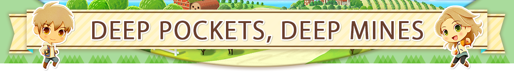
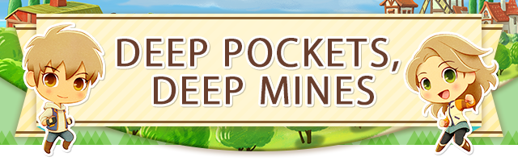
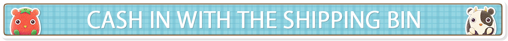
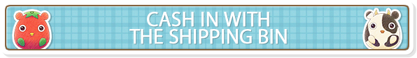
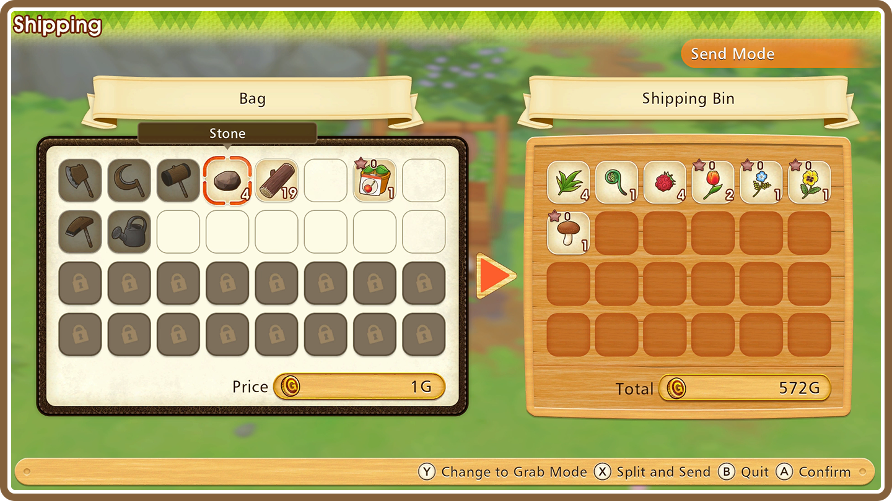
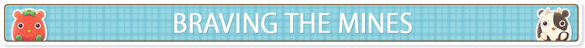
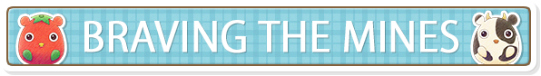
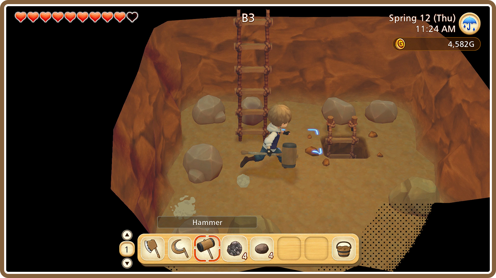
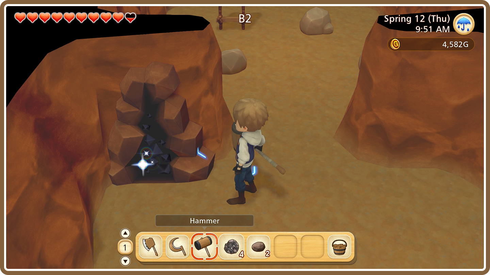

 
 
You can use the shipping bin found just beside your house to ship off crops, fish, byproducts, or even any unwanted items. These items will be exchanged for money at the end of each day.

How to Ship
By examining the shipping bin, you can choose to ship out items that are currently in your bag. If you have multiple of the same item, you can either ship out the whole stack, or you can use the X Button to specify the amount you'd like to put into the shipping bin. Any items in the bin will be shipped out when you go to bed, and the profits from the transaction will be added to your total funds.
 
The caves on your farm are connected to ore-rich mines. As you explore a mine, keep an eye out for ladders going down—they'll allow you to descend to the lower levels. Whenever you're ready to leave, simply examine the ladder that leads back up.

Keep An Eye Out for Sparkles!
Every so often, you might be lucky enough to come across a sparkling ore vein, or a sparkling mound on the ground. If you hit these sparkling spots with your hammer or hoe, you have a chance of obtaining rare ores or raw gems from them.

- Beware of Baddies!
-
Shady mole-like creatures called "Baddies" reside in the mines. Try not to get too close to them, or they'll sap your stamina away! The ground changes wherever the Baddies are, so be sure to use that to your advantage when trying to keep track of them. Smack them with your hammer to teach them a lesson...they may drop rare items if you do!